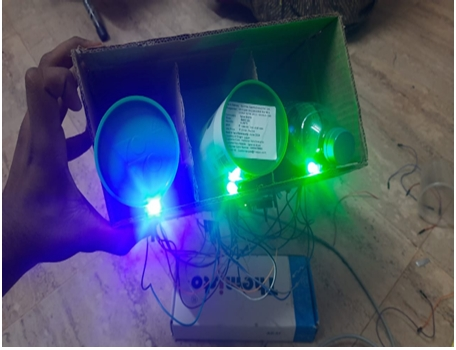

🔧 Sequence Missing Prevention – IoT Smart Compartment System
Field: Industrial IoT | Smart Assembly Systems
🔍 Problem Statement
In high-speed, Just-In-Time (JIT) assembly workflows, part sequencing is crucial. When operators pick components out of order, it leads to defective assemblies, bottlenecks, and rework—undermining quality and production efficiency.
🧪 My Contribution
- Co-developed an IoT Smart Bin System with integrated load cells and Arduino UNO
- Designed a real-time LED guidance mechanism to verify pick sequences visually

- Programmed logic in Embedded C for sequence validation and fault alerts
- Built a fully working pick-to-light prototype with weight-sensitive logic
- Simulated live assembly conditions using batch trials and conditional testing
⚙️ Technologies Used
- Arduino UNO (microcontroller)
- Load Cells (HX711 interface)
- RGB LEDs & LED strips
- Embedded C programming
- Basic networking logic for IoT communication
📈 Outcomes & Impact
- ✅ Achieved 100% sequence adherence during multiple test cycles
- ✅ Real-time alerts enabled immediate supervisor interventions 
- ✅ Operator sequence errors dropped significantly post-prototype implementation
- ✅ System was proposed for integration into Hyundai’s live assembly line
🎓 Learning Highlights
- Real-world prototyping for industrial workflows
- Hands-on control logic for smart manufacturing
- Cross-domain understanding of sensors, feedback, and industrial ergonomics
This project reflected a scalable approach to intelligent assembly workflows using low-cost hardware and smart sensing logic. By leveraging embedded systems and real-time visual feedback, we demonstrated an effective way to reduce human error and enhance lean manufacturing setups.